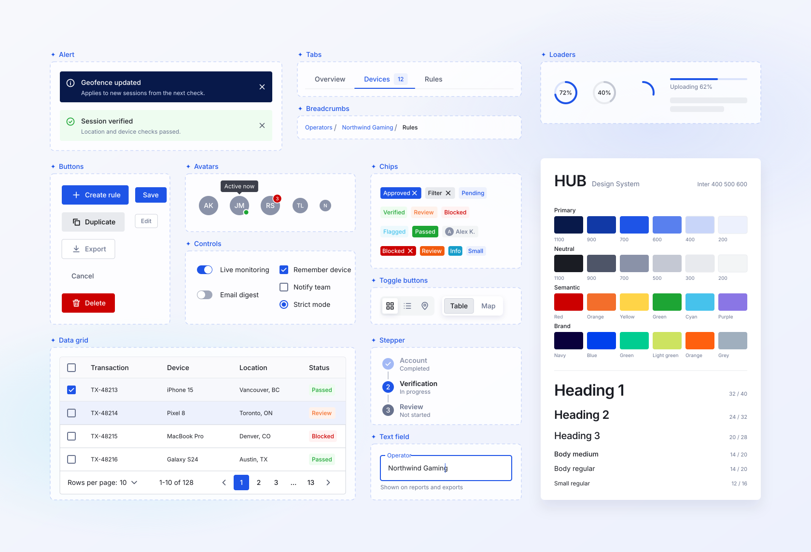

A. Current: WebP, 2000px
140 KB. Stretched on Retina screens.

B. WebP from the 3360px PNG, with a 1x/2x srcset
300 KB on Retina, 140 KB otherwise. Pixel-identical to the PNG, Inter baked in.
C. SVG
41 KB, sharp at any zoom. Text is live, so it renders in Helvetica/Arial instead of Inter (an <img> SVG can't load web fonts).
